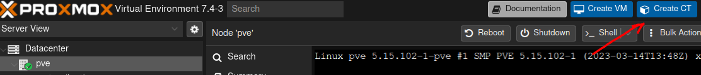
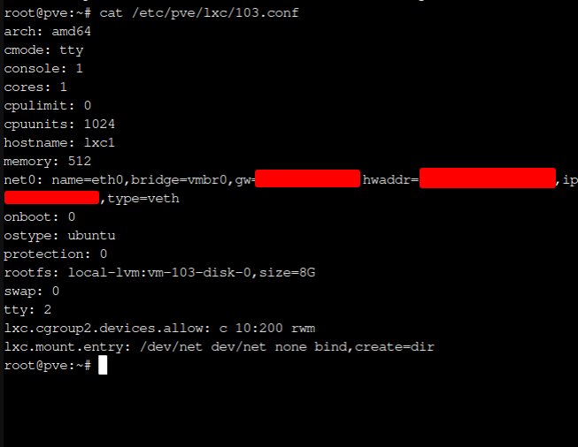
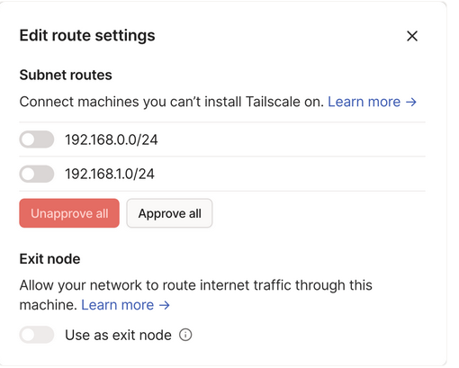

The goal of this post is to set up the (in my opinion) essence of the homelab, the remote access. Who does not want to have access to all the awesome stuff you set up in the first place?
I’ll be going over my approach focusing on being to the point and keeping the cost to a minimum. Since we are talking about a homelab I’ll assume there is a container manager in place, proxmox in my case does the job(in general even a desktop or an old laptop will do in order to run tailscale.) and we’ll work on that.
So let’s see what we will need.
- Proxmox server.
- Container on said server.
- Tailscale installed on said container.
- Properly configured tailscale through dashboard or ACLs.
Proxmox container configurations Link to heading
We will be creating a container in proxmox in order to keep resources low and make it as simple as it can get.
Through the cli Link to heading
As base we will use the latest lts of ubuntu since tailscale has a package for it.
pveam update
pveam download local ubuntu-22.04-standard_22.04-1_amd64.tar.zst
(local refers to the storage on proxmox)
pct create 103 local:vztmpl/ubuntu-22.04-standard_22.04-1_amd64.tar.zst
which will create the container with the id 103.
Or the gui Link to heading
Another alternative would be to use the proxmox web gui to create it.

Now in order to be able to run any vpn related software on the container we will need to have access to /dev/net/tun and in order to do that we will need to add some lines in the conf file of the container. So on the proxmox host we need to edit the file /etc/pve/lxc/103.conf (or whatever id number the container has) and add the following lines.
lxc.cgroup2.devices.allow: c 10:200 rwm
lxc.mount.entry: /dev/net dev/net none bind,create=dir

OS side configuration Link to heading
Inside the container we need to enable ipv4 forwarding for tailscale to work with sysctl -w net.ipv4.ip_forward=1. After that we proceed by installing tailscale from https://tailscale.com/download/linux/ubuntu-2204 check that the service is started properly with systemctl status tailscaled
and finally in order to give access to the rest of the network we need to advertise subnet routes with
sudo tailscale up --advertise-routes=192.168.0.0/24
or whatever is suited for your network.
Subnet routes in tailscale admin console Link to heading
Last step is to approve the advertised routes from the admin console in tailscale. There are two alternatives to this, on is to manually do it and the other is to pre-approve them using tailscale ACLs.

or (example taken from tailscale documentation)
{
"groups": {
"group:dev": ["alice@example.com", "bob@example.com"]
},
"acls": [
// Users in group:dev and devices in subnets 192.168.0.0/24 and
// 192.168.1.0/24 can access devices in subnets 192.168.0.0/24 and
// 192.168.1.0/24
{ "action": "accept",
"src": ["group:dev","192.168.0.0/24", "192.168.1.0/24"],
"dst": ["192.168.0.0/24:*", "192.168.1.0/24:*"]
}
]
}
Conclusion. Link to heading
By approving the routes you should now be able to see the rest of the devices in your network even when not home. Next step is to use DNS to be able to communicate more easily with our computers but mainly to be able to access all our services if using a reverse proxy for example.